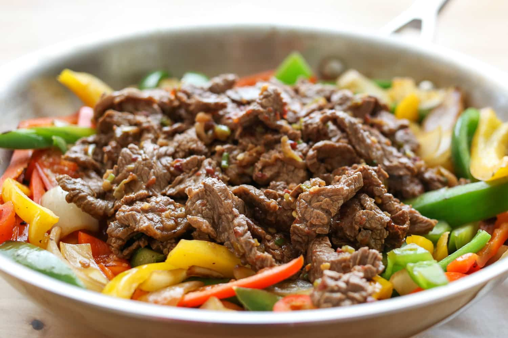

BULGOGI
COREIA - PRINCIPAL

Bulgogi com carne bovina
Bulgogi é um prato tradicional coreano feito com carne bovina cortada em fatias e marinada em molho de soja, açúcar, pimenta, alho, óleo de gergelim misturado à outros ingredientes, que podem variar a cada receita, como por exemplo a cebolinha, macarrão celofane, cogumelos de diferentes espécies, entre outros. É comumente servido com folhas de alface para que a pessoa embrulhe as tiras de carne, formando uma combinação perfeita.
INGREDIENTES
- 8 bolinhos coreanos (entre 200g e 600g);
- 4 e 1/2 xícaras de caldo de sopa coreano;
- 1 colher de sopa de molho de soja regular;
- 1/2 colher de chá de alho picado;
- 2 ovos batidos;
- 1 colher de chá de óleo de gergelim;
- 1 ou 2 talos de cebolinha, fatiados finamente;
- 2 ovos com clara e gema separadas;
- alga seca (gim ou nori) fatiada fina;
- sal marinho fino a gosto;
- pimenta preta a gosto
MODO DE PREPARO
- Ferva o caldo da sopa em fogo médio-alto. Adicione o molho de soja e o alho. Quando o caldo estiver fervendo, adicione os bolinhos. Ferva a sopa até que os bolinhos estejam totalmente cozidos; cerca de 2 à 3 minutos para bolinhos menores do tamanho gyoza e 6 à 8 minutos para bolinhos maiores quando cobertos.
- Frite a clara e a gema do ovo separadamente em temperatura baixa com um pouco de óleo. O ovo adicional não é realmente necessário, pois você estará adicionando o ovo na sopa, mas apresenta bem quando a sopa também é guarnecida com as claras e gemas.
DICAS
- O sabor do Mandu Guk depende em grande parte do caldo base e também dos ingredientes usados no recheio do mandu. Entre outras opções, o caldo de osso, o caldo de carne e o caldo de anchova são populares.
- Você pode usar mandu caseiro ou comprado em lojas para fazer esta sopa.